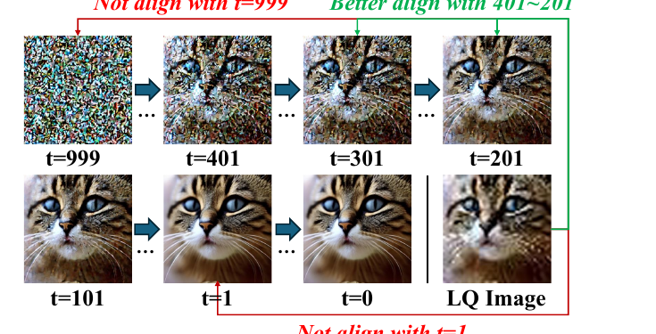
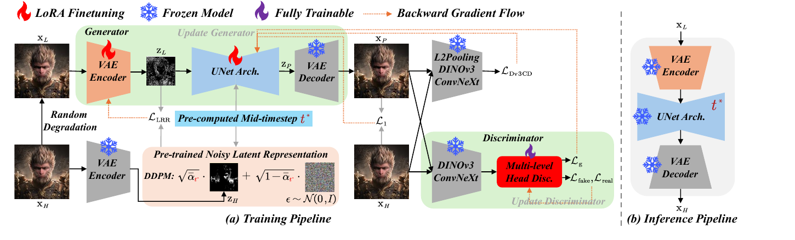
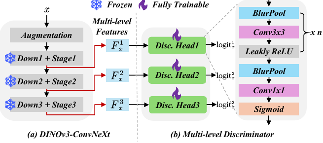
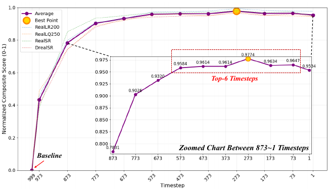

OMGSR: You Only Need One Mid-timestep Guidance for Real-World Image Super-Resolution

📌 先回答一个常见误解：OMGSR（以及建立在它之上的 op4ksr-2026）不是师生蒸馏。它没有 teacher、没有 score distillation、没有轨迹一致性。它是一套 GAN：生成器就是扩散模型本身（LoRA 微调），判别器是 DINOv3-ConvNeXt + 多级头，监督来自真值高清图 + 判别器。和 SinSR（一致性蒸馏）、OSEDiff（VSD 分数蒸馏）是两条不同的路。本文末尾 §5 有交叉对比。
1. 出发点 (Motivation)
多步扩散超分质量好但慢（N 步约等于 N 倍耗时）。一步方法快，但要解决一个问题：低清图 latent 该从扩散流的哪个时刻注入？
以往一步方法（OSEDiff 注入 t=999，PiSA-SR 注入 t=1）默认 \(z_{999}=z_L\) 或 \(z_1=z_L\)。但按扩散的加噪公式 \(z_t=\sqrt{\bar\alpha_t}\,z_H+\sqrt{1-\bar\alpha_t}\,\epsilon\)，\(z_{999}\approx\epsilon\)（纯噪声）、\(z_1\approx z_H\)（干净图）。而真实世界的低清图 \(z_L\) 既不是纯噪声、也不是干净图——硬塞到两端就制造了一个「潜空间表征鸿沟」(latent representation gap)，预训练的生成先验被打乱。
Fig. 1 用肉眼证明了这点。最近的 InvSR 也注意到了，但它凭经验手选一串中间时刻（250/200/150/100/50），既没量化、也没从训练角度进一步缩小鸿沟。OMGSR 的两个贡献正是补这两个洞：
- 用 SNR 把最佳中间时刻 \(t^*\) 算出来（不再拍脑袋）。
- 用 LRR 损失把 \(z_L\) 进一步训练得更贴近 \(t^*\) 的带噪 latent（从参数层面缩小鸿沟）。
Real-ISR
真实世界图像超分：输入退化未知（非简单 bicubic），用 Real-ESRGAN 合成 LQ-HQ 训练对。
潜空间鸿沟
低清图 latent z_L 与「预训练扩散在某时刻该有的带噪 latent z_t」之间的距离。注入点选错 → 鸿沟大 → 先验失效。
中间时刻 t*
让 z_L 与 z_t 的信噪比最接近的那个扩散时刻。SD2.1-base 上算出来是 273。
SNR（信噪比）
latent 里「信号能量 / 噪声能量」。把 z_t 和 z_L 都分解成信号+噪声，比 SNR 就能定位 t*。
LRR 损失
Latent Representation Refinement：LoRA 微调 VAE 编码器，把 z_L 进一步拉向 z_t* 的带噪 latent。
Dv3CD 损失
把 DISTS 结构感知损失架在 DINOv3-ConvNeXt 上（替代 LPIPS），原生支持 512/1K/4K 高分辨率。
生成器 = 扩散模型
OMGSR 是 GAN：把 LoRA 微调后的 SD 当生成器，而非从噪声生成。LQ→HQ 的映射比 Noise→HQ 好学、训练更稳。
多级判别器
从 DINOv3-ConvNeXt 抽 3 个层级特征，各接一个判别头出 logits，兼顾细节与结构。
2. 方法 (Method)

2.1 用 SNR 算出最佳中间时刻 t*（核心一）
把预训练带噪 latent \(z_t\)（由干净 latent \(z_H\) 和噪声 \(\epsilon\) 线性组合）和低清 latent \(z_L\)（看成 \(z_H\) 与退化噪声 \(z_L-z_H\) 的组合）都算信噪比：
—— 翻译: 左边是扩散在时刻 t 的「信号/噪声」比（t 越大噪声越多、SNR 越小）；右边是低清图相对干净图的「信号/退化」比。两者相等的那个 t，就是 z_L 在扩散流上「物理位置」最匹配的时刻。
然后遍历所有 \(t\)，取让两者 SNR 差最小的平均最优 \(t^*\)：
—— 翻译: 在整个数据集上，挑那个让「扩散时刻 t 的信噪比」与「低清图信噪比」平均最接近的 t，作为统一的注入时刻。SD2.1-base 上算出来是 273。
代码里就是逐 \(t\) 算两个 SNR、取绝对差、在数据集上累加求最小：
repo/mid_timestep/mid_timestep_sd.py:L59-L75 — 逐时刻算 SNR1(z_t) 与 SNR2(z_L) 的绝对差，对应 Eq.3–5
for t in select_timestep:
sqrt_alphas_cumprod_t = math.sqrt(noise_scheduler.alphas_cumprod[t])
sqrt_one_minus_alphas_cumprod_t = math.sqrt(1 - noise_scheduler.alphas_cumprod[t])
signal_power = torch.mean((hq_latent) ** 2) * (sqrt_alphas_cumprod_t**2)
noise_power = sqrt_one_minus_alphas_cumprod_t ** 2
SNR1 = signal_power / noise_power # SNR(z_t)
signal_power2 = torch.mean(hq_latent ** 2)
noise_power2 = torch.mean((lq_latent - hq_latent) ** 2)
SNR2 = signal_power2 / noise_power2 # SNR(z_L)
loss = torch.abs(SNR1 - SNR2) # |SNR(z_t) - SNR(z_L)|
loss_accumulators[t] += loss.item() * batch_size
高中生版直觉：你有一张糊掉的照片，想把它放回"扩散电影"的某一帧。扩散电影从清晰（t=1）一路加噪到雪花屏（t=999）。这张糊照片的"糊"程度对应电影里的某一帧——SNR 就是用来量"糊到什么程度"的尺子，量完直接对号入座。
2.2 LRR 损失：把 z_L 进一步训得更贴 t*（核心二）
算出 \(t^*\) 只是「平均」最优。OMGSR 还想做样本级的细化：用 LoRA 微调 VAE 编码器 \(E_\varpi\)，让它编出来的 \(z_L\) 主动逼近 \(t^*\) 处的带噪 latent \(z_{t^*}\)：
—— 翻译: 让"可训练编码器编出的低清 latent"和"由高清图在 t* 处加噪得到的带噪 latent"尽量相等。用 L2 是因为它和 DDPM 预训练目标一致（KL 在 DDPM 里等价于 L2），梯度更稳。
注意一个对照实验设计：作者还试过把 \(z_L\) 拉向干净的 \(z_H\)（记 \(\mathcal{L}_{\text{TOHQ}}\)），结果 LRR（拉向带噪 \(z_{t^*}\)）更好——因为贴合"模型预训练时见过的带噪分布"才能真正激活生成先验。
repo/train/train_omgsr_s.py:L446-L453 — 由 HQ 加噪造 z_t*，再与可训练编码器的 z_L 算 MSE，对应 Eq.6
hq_latent = encode_images(hq_img, fixed_vae)
noise = torch.randn_like(hq_latent)
pretrained_noisy_latent = sqrt_alphas_cumprod_t * hq_latent + sqrt_one_minus_alphas_cumprod_t * noise
lq_latent = encode_images(lq_img, unwrap_model(lora_vae)) # 可训练 LoRA 编码器
# LRR Loss: Latent Representation Refinement Loss
loss_LRR = F.mse_loss(pretrained_noisy_latent, lq_latent, reduction="mean") * args.lambda_LRR
2.3 一步去噪（在 t* 处）
UNet 也用 LoRA 微调。把 \(z_L\) 当作 \(t^*\) 处的带噪 latent，预测噪声 \(\epsilon_\theta\)，一步反解出干净 latent \(z_P\)，再 VAE 解码出图：
—— 翻译: 这就是把加噪公式 z_t=√ᾱ·z_H+√(1-ᾱ)·ε 反过来解 z_H——只不过 t 固定在 t*、只算一次，所以叫"一步"。
repo/train/train_omgsr_s.py:L432-L436 — 一步预测：UNet 出噪声 → 反解 latent → VAE 解码，对应 Eq.7
def one_mid_timestep_pred(lq_latent):
model_pred = unet(lq_latent, mid_timestep, encoder_hidden_states=prompt_embeds).sample
denoised_latent = (lq_latent - sqrt_one_minus_alphas_cumprod_t * model_pred) / sqrt_alphas_cumprod_t
pred_img = (fixed_vae.decode(denoised_latent / fixed_vae.config.scaling_factor).sample).clamp(-1, 1)
return pred_img
2.4 GAN 架构与 Dv3CD 损失
为什么是 GAN 而不是从头训判别器？ 生成器（扩散模型）自带强先验、太能打；判别器从零学会被瞬间碾压。所以判别器也建在带先验的 DINOv3-ConvNeXt（冻结）上抽多级特征，只训判别头（Fig. 3）。选 DINOv3 是看中它靠 RoPE 的外推能力，能原生适配 512/1K/4K 等不同分辨率。

结构感知损失不用 LPIPS（VGG 只在 224×224 上训，高分辨率会出伪影），改用 Dv3CD：在 DINOv3-ConvNeXt 的多级 L2-pooling 特征上算 DISTS（结构+纹理相似度）。
repo/dinov3_gan/dinov3_convnext_dists.py:L86-L108 — Dv3CD：逐层算均值相似度 S1 + 协方差相似度 S2，对应 Eq.11
def forward(self, x, y):
feats0 = self.l2pooled_dinov3_convnext(x)
feats1 = self.l2pooled_dinov3_convnext(y)
dist1 = dist2 = 0
c1 = c2 = 1e-6
for k in range(len(self.channels)):
x_mean = feats0[k].mean([2, 3], keepdim=True); y_mean = feats1[k].mean([2, 3], keepdim=True)
S1 = (2 * x_mean * y_mean + c1) / (x_mean**2 + y_mean**2 + c1) # 纹理(均值)相似
dist1 = dist1 + (self.init_value * S1).sum(1, keepdim=True)
x_var = ((feats0[k]-x_mean)**2).mean([2,3],keepdim=True); y_var = ((feats1[k]-y_mean)**2).mean([2,3],keepdim=True)
xy_cov = (feats0[k]*feats1[k]).mean([2,3],keepdim=True) - x_mean*y_mean
S2 = (2 * xy_cov + c2) / (x_var + y_var + c2) # 结构(协方差)相似
dist2 = dist2 + (self.init_value * S2).sum(1, keepdim=True)
return (1 - (dist1 + dist2)).mean()
完整损失。生成器 \(\mathcal{L}_G=\lambda_1\mathcal{L}_{\text{LRR}}+\lambda_2\mathcal{L}_g+\lambda_3\mathcal{L}_{\text{Dv3CD}}+\lambda_4\mathcal{L}_1\)；判别器 \(\mathcal{L}_D=\lambda_2(\mathcal{L}_{\text{fake}}+\mathcal{L}_{\text{real}})\)（标准 GAN，BCE，real 软标签 0.8、fake 0）。训练循环里 G 和 D 交替更新：
repo/train/train_omgsr_s.py:L464-L483 — 生成器 4 项损失合并更新；判别器对 fake(detach)/real 分别更新
loss_G = net_disc(pred_img, for_G=True) * args.lambda_GAN
total_G_loss = loss_LRR + loss_Dv3D + loss_L1 + loss_G # 生成器：LRR + Dv3CD + L1 + GAN
accelerator.backward(total_G_loss); optimizer_sr.step()
fake_img = pred_img.detach()
loss_D_fake = net_disc(fake_img, for_real=False) * args.lambda_GAN # 判别器：假图 → 0
loss_D_real = net_disc(hq_img, for_real=True) * args.lambda_GAN # 判别器：真图 → 1
total_D_loss = loss_D_real + loss_D_fake
accelerator.backward(total_D_loss); optimizer_disc.step()
3. 结论 (Key findings)
数字（论文 Tab. 1–4）：
- SNR 算出的 t*=273 就是经验最优点（Tab. 1 / Fig. 4）。在 t∈{873…1} 上扫，早期注入（999–673）性能崩，中后期（573–173）高且稳，峰值恰在 273，与 Eq.5 理论值吻合。把 OSEDiff 的注入点从 999 改成 273，全数据集全指标都涨——证明这是个通用结论，不只对 OMGSR 成立。
- LRR > LTOHQ > baseline（Tab. 2）。把 \(z_L\) 往带噪 \(z_{t^*}\) 拉（LRR）比往干净 \(z_H\) 拉（LTOHQ）几乎全指标更好——贴合模型训练时见过的分布更能激活先验。
- Dv3CD > LPIPS（Tab. 4）：28 个指标里赢 23 个，且 Fig. 5 显示 LPIPS 在高分辨率下出明显伪影、Dv3CD 干净。
- 整体 SOTA（Tab. 3）。OMGSR-S（SD2.1-base，一步）在 RealSR/DrealSR/RealLQ250/RealLR200 四个真实集上多数无参考指标（CLIPIQA+/LIQE/MANIQA/NIQE 等）排第一或第二，作为一步方法对得起多步方法。代价同样是偏感知：因为用 Dv3CD 而非 LPIPS，LPIPS 这个指标本身会偏高。

4. 实现细节 (Implementation notes)
- 生成器 = 扩散模型本身，无 teacher（
train_omgsr_s.py:L432-L467）。监督来自 GT 高清图（L1 + Dv3CD）+ 判别器（GAN），不是某个老师模型的输出。这是它和 SinSR/OSEDiff 蒸馏路线的根本区别。 - LoRA 秩：VAE 编码器 rank=16，UNet rank=32（
train_omgsr_s.py:L224及配置）。VAE 解码器冻结，只动编码器 + UNet（one_mid_timestep_pred里用的是fixed_vae.decode）。 - 训练规模很小：SD2.1-base，AdamW，lr=5e-5，batch=1 + 4 步梯度累积，4×RTX 4090、5100 steps（§4.1.1）。损失权重 λ1=5 (LRR)、λ2=0.5 (GAN)、λ3=5 (Dv3CD)、λ4=0.5 (L1)。
- 判别器细节：DINOv3-ConvNeXt 取前 3 级特征（末级偏全局语义、舍去），每级 L2-pooling 用 Hanning 窗做低通（
dinov3_convnext_dists.py:L7-L29）；判别头里 BlurPool 抗锯齿防伪影（Fig. 3 + §3.6）。real 用软标签 0.8、fake 用 0（§3.7.2 / §3.8.1）。 - t* 是数据集统计量、预计算一次（
mid_timestep_sd.py）。注入时刻不是逐样本变化，而是全数据集平均的单个 t*=273，推理时固定。 - 测试大图要 tiled diffusion（§4.1.2）：RealLQ250 / RealLR200 这类大/变尺寸图测试时仍需分块——⚠️ 这正是 op4ksr-2026 要干掉的"分块原罪"，OMGSR 在 4K 上仍未解决（OP4KSR 用 F16 VAE 全图一步替代）。
paper↔code 一致性：核验过 SNR（Eq.3–5）、LRR（Eq.6）、一步预测（Eq.7）、Dv3CD（Eq.11）、GAN 损失（Eq.12–15）五处，代码与公式完全对齐，无明显出入。
OMGSR-F（Flux 版）：结论里提到 OMGSR 框架也兼容 flow matching，作者在补充材料给了基于 FLUX.1-dev 的 OMGSR-F（仓库里有 mid_timestep_flux.py / train_omgsr_f.py）。这就是 op4ksr-2026 的真正起点——OP4KSR = OMGSR-F + F16 极压缩 VAE（上 4K）+ RFR/L_AP（治周期伪影）。
5. 批判性总结 (Critical assessment)
Strengths
- 把"拍脑袋"变成"算出来"。InvSR 凭经验选中间时刻，OMGSR 用 SNR 给出可复现的闭式判据，并用 OSEDiff 跨模型验证（273 对 OSEDiff 也成立）——这是最扎实的贡献。
- 诊断—公式—代码三者闭环。每个主张都能落到一行代码，本文交叉核验过五处全部对齐，可信度高。
- Dv3CD 解决了高分辨率 GAN 的真实痛点：LPIPS@224 在 512/1K 上出伪影，换 DINOv3-ConvNeXt 原生支持高分辨率，Fig. 5 有直观证据。
- 工程友好：纯 LoRA、单卡级显存、5100 步、开源完整。
Limitations / open questions
- t* 是全数据集单值，对退化分布差异大的样本未必最优；样本级只能靠 LRR 软性补偿，没有逐样本选 t。
- 大图仍依赖 tiled diffusion（§4.1.2），4K 场景下分块的语义/拼缝问题没解决——这正是后续 OP4KSR 的切入点。
- 偏感知、LPIPS/PSNR 不占优，保真优先场景慎用（与所有一步 GAN 超分同病）。
- SNR 推导假设 latent 可干净地分解成"信号+独立噪声"，且 \(\mathbb{E}[\epsilon^2]=1\)；真实退化噪声与高清信号未必独立，这个近似有多准没有定量误差分析。
- 判别器依赖 DINOv3-ConvNeXt 大模型，训练显存/速度成本比纯 LPIPS 高（虽冻结）。
When to use / not use
- 该用：要一步、真实世界、感知质量优先的 SR；想要一个可复现、可改 backbone（SD/Flux）的 GAN 超分框架。
- 别用：保真度（PSNR/SSIM）是验收硬指标；或目标是 4K 全图无分块（去看 op4ksr-2026）。
延伸阅读 (Further reading)
交叉验证比较 (Cross-validation against similar work) — 三条"一步扩散超分"路线，看它们对同一问题（怎么把多步压成一步、低清图怎么注入）给出的结论：
| 工作 | 核心结论 | 关键观察 | 与本文的异 / 同 |
|---|---|---|---|
| 本文 OMGSR | 一步 SR 的关键是把 z_L 注入到 SNR 匹配的中间时刻 t*，再 GAN 微调 | z_L 既非噪声也非干净图，硬塞两端 → 潜空间鸿沟；t*=273 | — |
| op4ksr-2026 | 把 OMGSR-F 抬到 4K + 无分块，但一步化触发 32px 周期伪影需 RFR/L_AP | 极压缩 + 一步 + RoPE 相位坍缩 = 周期格子 | 同: 都用中间时刻对齐 + GAN/Flux; 异: OP4KSR 解决的是 OMGSR 没碰的"4K 显存 + 分块 + 周期伪影" |
| oftsr-2024 | 一步流超分可调"保真↔真实感"整条曲线（调 t 滑动） | 噪声增广 + PF-ODE 轨迹约束解锁整条权衡曲线 | 异: OFTSR 是两阶段蒸馏（先训 teacher rectified flow 再蒸 student），OMGSR 是单阶段 GAN 无 teacher——同问题、完全不同刀法 |
| OSEDiff（基线，无独立页） | 一步 SR 用 VSD 分数蒸馏做 KL 正则 | 注入 t=999、靠冻结 SD 当 score teacher | 异: OSEDiff 有 teacher（VSD）、注入点拍在 999；OMGSR 无 teacher、注入点算出来的 273——Tab.1 显示把 OSEDiff 改到 273 也能涨 |
分歧的可能成因：OMGSR vs OSEDiff/OFTSR 的最大分野在于**「靠什么把一步训出来」——OSEDiff/SinSR/OFTSR 用蒸馏**（teacher 提供 score/轨迹/一致性目标），OMGSR 用 GAN + 中间时刻对齐（判别器 + GT 直接监督）。前者把"多步知识"压进学生，后者干脆绕开多步、直接在最优注入点上一步回归 + 对抗。两条路都能到 SOTA，说明"一步"本身不挑实现范式，挑的是注入点选得准不准——这正是 OMGSR 的核心论点。
相关工作 (Related work)
- op4ksr-2026 — OMGSR-F 的 4K 无分块续作（直接建立在本文之上）
- oftsr-2024 — 一步流超分 + 可调保真/真实感权衡（蒸馏路线对照）
6. 研究启发 (Transferable takeaways)
1. 用物理量把超参从"经验"升级成"算出来"
InvSR 拍脑袋选中间时刻，OMGSR 用 SNR 给闭式判据。当你在为某个超参做网格搜索时，先问：有没有一个能直接算出它的物理量？把搜索变成测量，结论才可迁移、可复现。
2. 对齐"模型见过的分布"，而非"看起来对的目标"
LRR 把 z_L 拉向带噪 z_t* 比拉向干净 z_H 更好——因为前者贴合预训练分布、能激活先验。微调预训练模型时，监督目标要落在它训练时的数据流形上。
3. 判别器/感知损失也要"带先验 + 配分辨率"
从零训判别器会被强生成器碾压 → 架在 DINOv3 上；LPIPS@224 在高分辨率出伪影 → 换原生支持高分辨率的骨干。辅助网络的预训练域必须匹配任务的数据尺度。
4. 反直觉点：一步 SR 不一定要蒸馏
主流一步方案（VSD/一致性/ADD）都绕不开 teacher。OMGSR 证明：只要把低清图注入到正确的中间时刻，一步回归 + GAN 就够了，省掉整个 teacher 流程。"加速=蒸馏"是个该被质疑的默认。
讨论 / Comments
评论托管在本仓库的 GitHub Discussions, 需 GitHub 账号。